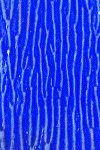
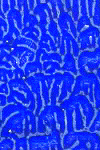
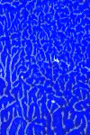
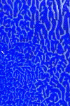
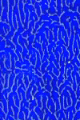

| Here is an experiment with reprocessing, replacing the paper after a 90 degree rotation each time. |
| We see a picture processed once, then similarly prepared pictures reprocessed 1 through 4 times. |
| Before each reprocessing, the top paper is rotated 90 degrees from its previous orientation. |
| Click each picture for a magnified view in a new window. |
|  |  |  |  |  |
| Certainly, couting the number of branches is too difficult, and least by eye. |
| Nevertheless, the visual complexity of the image increases even after the first reprocessing, and this trend may continue, though not very markedly, with successive reprocessings. |
| Note that reprocessing with rotation breaks many of the longer branches into smaller segments. |
| Also note the width of the ridges becomes more uniform with reprocessing. (This is not seen in reprocessing without rotation.) |
Return to Tanja Geis' experiments.